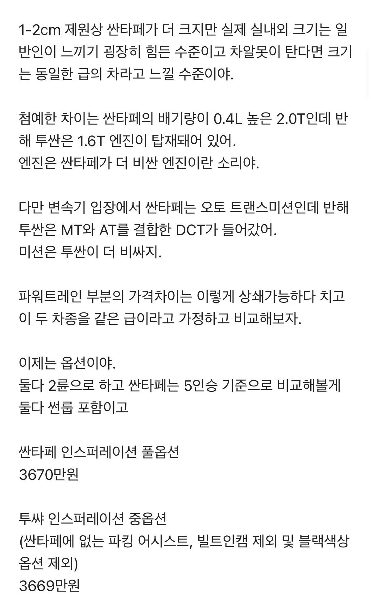
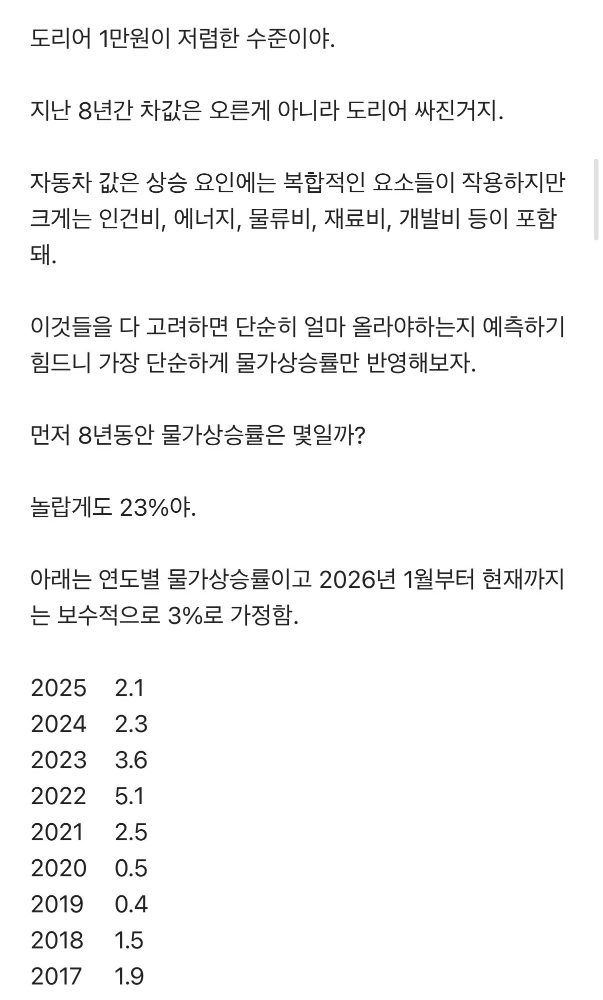
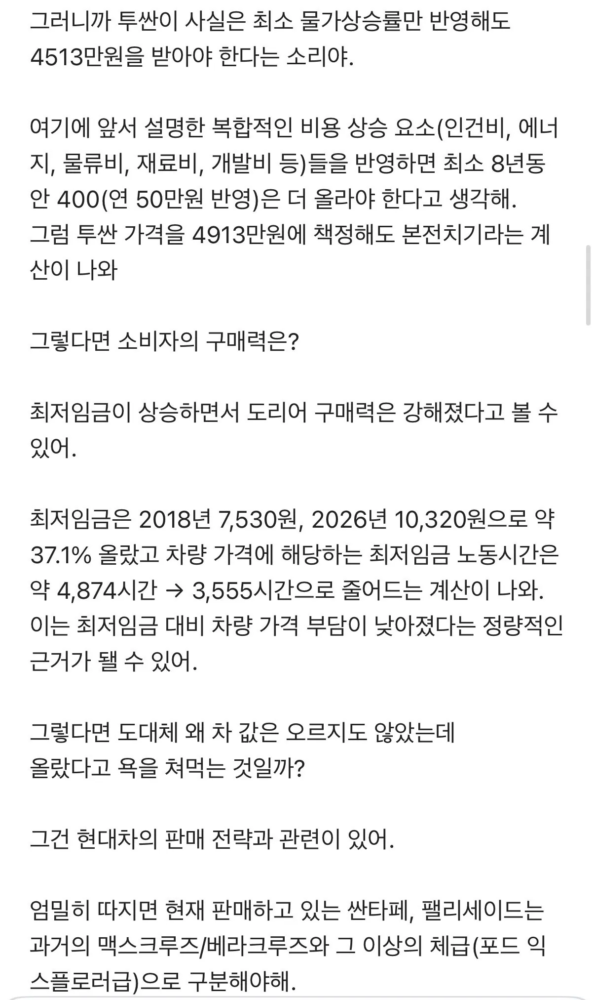
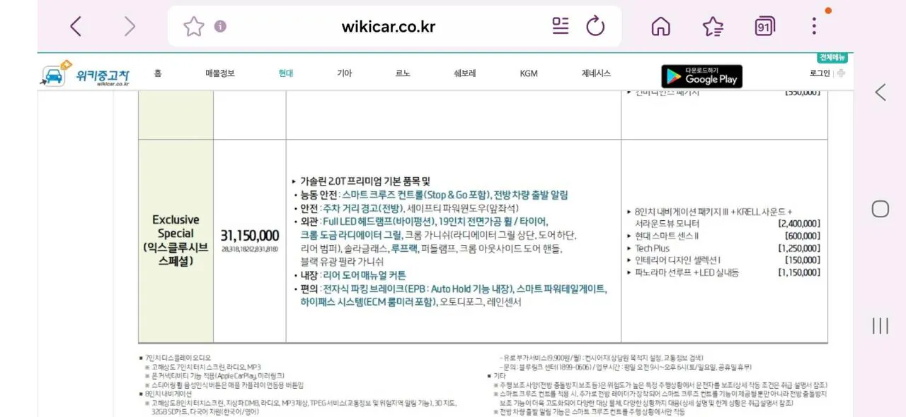
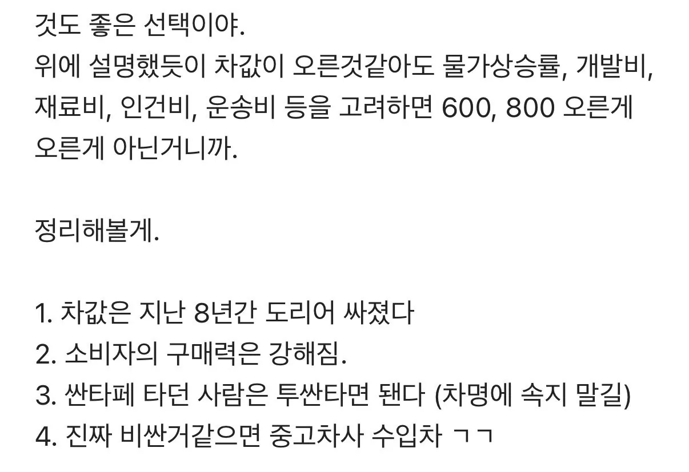
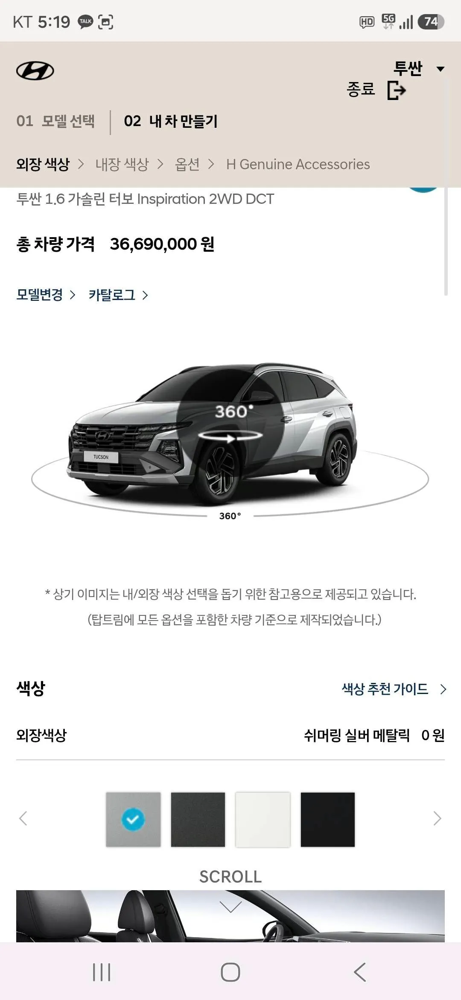
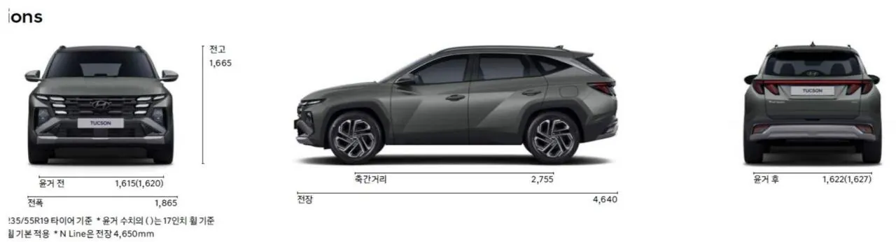
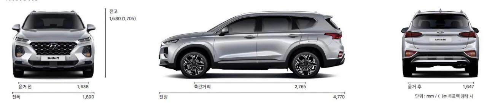

소비자의 선택권을 점점 조져버리면서 그딴소리 해봤자 반발만 나온다는거임 50원이 100원되는거랑 2천만원이 4천만원 되는건 느낌이 다르잖어
성능 오름폭이 체감이 안됨 ㅋㅋ 페이스 오프 원툴로 가격올림 ㅋㅋ
싼타페는 2.5T
나는 어느정도 동의 하긴 함ㅋㅋ
맞는말같은데 왤케 욕하냐 물가상승률에 비하면 존나 조금오른건 맞잖아
인식이 옛날에 박혀서 안움지이는 사람이 많은듯..
사실 테슬라도 세계 판매가격 보면 한국에서 유독 싸게 판매중인게 맞음
일본 유럽등과 가격비교하면 한국이 제일 저렴함. 한국의 현대 기아 전기차를 확실히 제압하기 위해 현재 저마진 정책으로 파는거고 아마 지분을 다먹고 나면 유럽이나 일본수준으로 가격이 다시 올라갈거 같음
옆에 중국 테슬라공장, 현기 아니였음 테슬라 절대 이가격 한국에 안판다
물가도 물가고
네이밍이 체급을 못따라가서 생긴 문제임
사람들은 투싼을 원하지
싼타페사양에 투산이름 붙여서 돈은 싼타페 가격 주고싶지 않다고
사람들 심리적인것도 큼
10년간 급여가 2배는 올랐을텐데
짜장면값 5000원에서 10000원 되면 욕하는거 처럼
10년간 급여가 뭘 2배가 올라 ㅋㅋㅋ
16년 최저가 6천원이였는데 26년 최저가 만원이니 얼추 비슷하긴하지
2015 최저시급 5580
2025 최저시급 10320
저임금자일수록 2배 상승이 맞긴 하지
뭔 급여가 두배가 올라 ㅋㅋㅋㅋㅋㅋㅋㅋ
직원들 월급여보다는
성과급 타결금으로 나오는 중소기업 초봉급 일시불 현금지급
네임밸류가 형편 없는데 중형이 5천이라니 용납이 안되는거지
문짝에 인조가죽이라도 떡칠 해줬어야지
맞는 말이지
이야 핸드폰은 매년 대 할인을 하고있구나!ㅋㅋㅋㅋ
통신비도 바겐세일이곸ㅋㅋㅋㅋ
현기가격 하두올려서 이제 수입차랑 만났는데 그냥 올리고 수입차보다 비싸게팔면될듯
우리 통신비 25년간 거의 동결이었다
500m 인터넷 원래 10만원은 받아야한다
맞춤법 시발
어느정도 맞말임 지금 아반떼가 그랜저xg랑 크기 비슷함 ㅋㅋㅋ
근데 현대가 특히 아반떼 투싼 엔트리급 가격책정에서 욕먹는건 기존 준중형 수요 무시하고 강제로 2000cc급 엔진으로 업글하고 업사이징하면서 가격올리고 저가트림 선택지 자체를 없애버린거지 ㅋㅋ
아반떼가 전세대 쏘나타 전전세대 그랜저급으로 업글된건 알겠는데, 그럼 이전의 아반떼급엔 무슨 대안을 내놨냐고 ㅋㅋ
솔직히 테슬라가 유독 가격경쟁력이 높은거지 그 외에 다른 회사들이랑 비교했을 때 가격으로 보면 고만고만하긴 함
아반떼랑 동급인 프리우스가 현지 가격으로 보면 아반떼랑 가격 비슷하고 크라운 세단은 그랜저보다 천 만원씩은 비싼데다가 5시리즈는 현지에서 한국보다 더 비싼거 같던데
아반떼는 아반떼 답게
쏘나타는 소나타 답게
그랜져는 그랜져 답게 만들면 되는데
왜 체급을 올려서 만드냐고
그래서 엘전도 맛이간거임 ㅋㅋㅋ tv 냉장고 세탁기 전부 10년 전이랑 지금이랑 가격 유사 수준이잖아 ㅋㅋ 국산 마케팅 하는데 인건비 재료비 다 올랐는데 가격은 그대로고 가격 올리면 삼성/짱 에 시장 다 뺏기겠지 ㅋㅋ 삼성은 반도체로 적자난거 채워줄 여력이라도 있지 엘전은..
물가가 올랐지만 상품의 수준이 낮잖아
밎긴한데 난 큰차를 원하지않아
하긴 그럴싸해
개인적으로 현기차는 옵션질보다 하위트림 구매시 벌브등(전구다마) 이랑 내외장 디자인 일부러 개좆같이 만들어서 꼬우면 상위트림사 씹새끼야~ 하는게 젤 족같음
일리있네 급이나 크기나 이전 세대 윗급 차량이면서 비슷한 가격에 사양은 더 좋아졌고 하지만 물가 상승에 비해 소비자의 체감가격은 더 크게 느껴진다는게 문제지 마치 내 월급은 안오르는데 집값이 비싸지는것과 비슷함 근데 집은 빚을 내서라도 꼭 있어야한다고 생각하는 경향이 강한데 비해 차는 그러지 못하다는데에 차이가 있겠고
아반떼가 소나타 사이즈가 되었다면 지금 아반떼 밑 포지션의 승용차는 뭐가있서?
없어 안팔리잖아
없어 베뉴가 유일
맞긴해 물가가 오르는게 있고 내리는게 있는게 차값은 상대적으로 내려갔다고 생각함 옷값도 ㅈㄴ내려가서 10년전이랑 가격이 비슷하고 생활물가도 다이소가 다 때려잡아서 10년전하고 동일함
옷값은 미쳐 날뛰는 중이야... 스톤 다운이 370만 대임 ㅈㄴ 올랐음
데스크탑은 30년전에 2백 3백이었으니깐 12백만원 받아야되네
그니까 왜 낮은 차급에서 굳~~~이 사이즈를 키워서 가격을 올리냐고ㅋㅋㅋㅋ글고 차가 집이여? 차 되팔때 집처럼 감가가 없나? 진짜 저딴놈들이 연구직이니 현대차가 개처망하는겨
그래서 집이 감가가 되냐고 빡대가린가
옛날 아반떼 기억함? 옛날 2000년대 초중반 구형 아반떼 구아방이랑 지금 아반떼랑 솔직히 이름만 똑같지 옵션 차크기 안정성 내부공간 마감까지 완전히 다른차임.
왜 그렌져 소나타 놔두고 굳이 아반때를 이렇게 올리고 비싸게 받나 싶긴한데 가격이 오를만하긴함
테슬라는 날던디
무슨 말 하는건지는 아는데 결국 가격 경쟁을 해야하는 품목이라는게 문제지 당연히 10년 전에 비하면 차도 커지고 경제성장도 하고 인플레이션도 엄청 발생했으니까 어느정도 가격은 사실 맞게 올라간건데 경쟁사들은 전혀 그렇지 않으니 문제인거지 10년 전에 bmw3시리즈 5시리즈는 프로모션 받으면 지금도 그 가격 그대로임 ㅋㅋㅋ 테슬라처럼 명목상 가격이 기술발전으로 인해 떨어진 차들도 많음 사실 현대도 중국에서 생산해서 한국으로 역수입해오는 게 더 저렴하게 팔 수 있을걸? 미친거임 이게
사실 지금도 아반떼 하브 풀옵이 4천 초반이라고 말이 많은거지 하이브리드 빼고 가솔린으로 적당히 타협보면 3300으로도 차 뽑을 수 있긴함 근데 이 크기나 옵션이 예전 그랜저xg급이라는거지 근데 예전 그랜저가 지금 아반떼보다 비쌌음 그렇게 생각하면 자동차 가격은 오히려 싸지고 있는게 맞아 심지어 현대라는 선택지만 있는 것도 아니고
테슬라, byd 생각하면 전기차도 점점 시간이 갈수록 싸지고 있음
테슬라는 싯가임
그돈씨 브랜드가 뭔
ㅋㅋㅋ합당하다 생각하면 그돈주고들 많이 사면됩니다
일단 여러 주장 중에서 그나마 합당하다고 들어줄만한 것은 물가상승률의 반영정도?
그래도 지금 나오는 가격보다는 좀 싸야해.
근데 좀 얼타는건 집값 상승과 최저임금쪽이네 물가상승의 예로 들기에 적합하지 않잖아
중요한건 이렇게 오르는 물가 속에서 사람들의 구매력은 그렇게 상승하지 않았다는거
반도체 그거는 일부에 불과한걸
되 에서 내림
작고 잘나가는차 만들어줘 : g70 안팔려서 단종 고민
작고 경제성 있는차 만들어줘: 액센트 안팔려서 단종